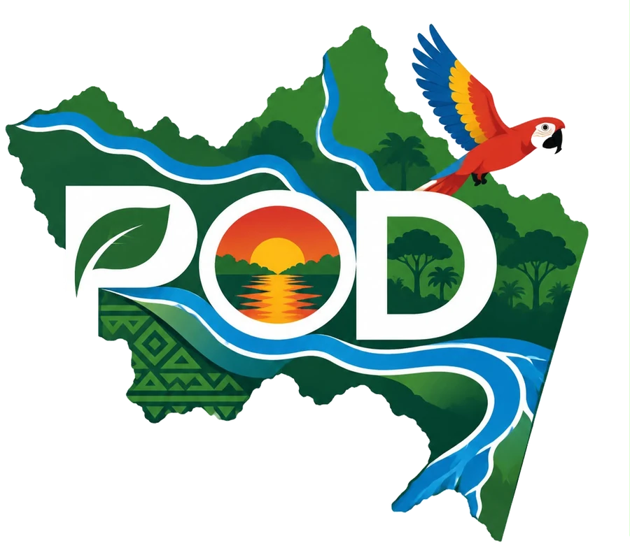

Observatorio Departamental del Amazonas
Descubre el Amazonas, capa por capa.
Recorre sus ríos, su selva y sus territorios. Consulta mapas, documentos e indicadores para entender cómo se planea su futuro.
Enciende una capa
Sigue el recorrido del agua que conecta a los municipios y las comunidades del departamento.

¿Por dónde quieres empezar?
GeovisorActiva, combina y consulta capas individuales en el mapa.Entrar →
GeoportalElige mapas temáticos listos, organizados por categoría.Entrar →
Avances del PODConsulta los reportes de seguimiento publicados.Entrar →
Biblioteca DigitalEncuentra documentos e información departamental.Entrar →
Documentos del PODRevisa las fases del Programa de Ordenamiento.Entrar →
Certificados ambientalesConoce el simulador del procedimiento ambiental.Entrar →
ARTICULACIÓN INTERINSTITUCIONAL
16 entidadesTrabajamos con entidades aliadas del territorio
Entidades que contribuyen y articulan procesos con la Secretaría de Planeación y Desarrollo Territorial del Amazonas.
Los enlaces abren las páginas indicadas por el equipo POD. Logos sujetos a disponibilidad de las fuentes externas.
OPORTUNIDADES PARA LA CIUDADANÍA
Convocatorias abiertas y cursos gratuitos
Consulta oportunidades y visita directamente las páginas de inscripción de cada entidad organizadora.
Actualmente no se han cargado convocatorias ni cursos verificados para esta versión.
Antes de postularte, verifica condiciones, fechas y requisitos en el sitio oficial de la convocatoria.
Un observatorio construido alrededor de la información del territorio.
Planificación · Gestión del riesgo · Transparencia · Seguimiento del desarrollo
EXPLORACIÓN GEOGRÁFICA · ETAPA DE PRUEBAS
Capas oficiales pendientesGeovisor del Amazonas
Explora capas de prueba de manera independiente, consulta sus atributos y analiza estadísticas disponibles por capa. La publicación oficial sigue pendiente de aprobación.
Mapa interactivo
Para visualizar el mapa base necesitas conexión a internet.
Haz clic en el mapa para consultar coordenadas
OpenStreetMap · base externa Capas locales de pruebaLas mediciones son orientativas y no constituyen resultados oficiales.
CATÁLOGO CARTOGRÁFICO · ETAPA DE PRUEBAS
Inventario en construcciónInformación territorial por temática
Explora las siete categorías de cartografía. Al seleccionar una temática accederás al Geovisor, donde podrás activar, acercar o ajustar la transparencia de sus capas de prueba.
Componente biofísico → Determinantes ambientales: 18 capas ligeras disponibles como piloto local, y 15 pendientes de preparación o validación. El Geovisor permite acceder a subcarpetas y capas individuales.
7Categorías previstas
3Carpetas fuente identificadas
0Capas oficiales publicadas
EXPLORAR CATÁLOGO
Temáticas territoriales
FUENTES YA IDENTIFICADAS
Carpetas cartográficas en Google Drive
Se han localizado estos repositorios de origen. No implica que sus capas estén procesadas, autorizadas para publicarse individualmente ni disponibles en el mapa. Los enlaces requieren permisos de Drive.
Próxima integración
Cuando se apruebe el inventario de capas, utilizaremos servicios compatibles con GeoServer/PostGIS o GeoNode. Desde entonces cada capa podrá mostrar metadatos, atributos, simbología, permisos y descarga autorizada. Esta versión no presenta resultados cartográficos oficiales.
OBSERVATORIO DEPARTAMENTAL · CUMPLIMIENTO DE METAS
Sin resultados oficiales publicados
Seguimiento al cumplimiento del POD
Explora los 57 indicadores y las metas identificadas en la matriz de seguimiento del Plan de Ordenamiento Departamental del Amazonas.
Modelo administrativo de demostración.
Los indicadores y las metas proceden de la matriz compartida. Esta versión permite probar un proceso de borrador, envío, revisión y aprobación; todos los cambios permanecen en este navegador. No hay autenticación ni publicación oficial. Los enlaces de Drive dependen de sus permisos.
57 indicadores y 59 metas: 56 indicadores tienen una meta y uno tiene tres. El cumplimiento de cada indicador se calcula promediando sus metas. El de cada apuesta se calcula promediando sus indicadores completos. Sin información no equivale a 0 %.
DATOS OFICIALES PUBLICADOS
Reportes de seguimiento POD
Esta sección consulta directamente los registros con estado publicado en Supabase. Los borradores no se muestran. Los valores acumulados no representan porcentajes de cumplimiento.
Cargando reportes publicados...
Los valores sin reporte se muestran como «Sin información», no como 0 %. Los promedios de esta DEMOSTRACIÓN incluyen solamente indicadores con todas sus metas y evidencias aprobadas. Cada apuesta se calcula como promedio simple de sus indicadores completos; si hay indicadores pendientes, la cifra está marcada como parcial.
SEGUIMIENTO POR APUESTA
Abre cada apuesta para consultar sus indicadores y acceder al detalle de metas y evidencias.Cuatro apuestas estratégicas del POD
Selecciona una apuesta para desplegar todos sus indicadores. Los porcentajes se calculan solo a partir de metas validadas y sustentadas por evidencias documentales.
CATÁLOGO DE INDICADORES
Cada indicador muestra metas, avance validado y enlaces a evidencias documentales cuando existan.Indicadores y metas
PROTOTIPO DE FLUJO ADMINISTRATIVO
PRUEBA LOCAL · SIN AUTENTICACIÓNGestión y revisión de avances
Simula dos funciones diferenciadas: el gestor registra y envía avances con documentos; el revisor los aprueba o devuelve. Este selector de roles NO es un inicio de sesión seguro. Todas las acciones son locales.
1. Elaborar borrador2. Adjuntar evidencias3. Enviar a revisión4. Revisar y aprobar5. Vista ciudadana
REVISIÓN DE METAS
Solo demostraciónBandeja de revisión
TRAZABILIDAD LOCAL
Historial de acciones de prueba
Importante: no hay autenticación ni repositorio documental conectado. Utiliza solamente enlaces a documentos de prueba o de acceso autorizado, nunca datos personales o confidenciales. La aprobación simulada no cambia los permisos reales de Google Drive. En producción habrá roles con autenticación, carga segura, revisión en servidor y auditoría persistente.
Observaciones del Excel: el indicador 29 presenta una fila con el nombre de otro indicador (fila 54); se excluyó ese registro duplicado por precaución. El indicador 44 no tiene información de meta en G/H/I (fila 75). Ambos casos requieren validación de la matriz de origen.
INTEGRACIÓN FUTURA
El informe definitivo se configurará con las metas y los avances validados.Dashboard de Power BI
ANÁLISIS INTERACTIVO
Sin informe institucional asociado
Dashboard de Power BI
Informe interactivo del PODEspacio reservado para el dashboard institucional
El informe del POD aparecerá aquí
El diseño está preparado para mostrar un dashboard de Power BI. Todavía no tenemos su enlace de inserción autorizado ni acceso al conjunto de datos oficial.
Sin cifras ficticias · Sin conexión automática todavíaVista previa de un informe autorizadoEl acceso depende de los permisos de Power BI.
¿Ya tienes un enlace de Power BI?
Puedes probar un enlace de inserción autorizado, sin modificar el archivo HTML. Esta prueba no publica el informe ni guarda el enlace.
Aún no se ha introducido un enlace.
Seguridad: usa solo informes autorizados para consulta pública o institucional. Los informes privados pueden requerir iniciar sesión en Power BI y licencias adecuadas. Un enlace de Google Drive no sustituye al enlace del informe.
MÓDULO DE COMPATIBILIDAD DE DETERMINANTES AMBIENTALES
Simulador · sin radicación
Certificado de compatibilidad ambiental
Consulta el proceso y prueba el registro de una solicitud, desde la información del proyecto hasta la revisión técnica de determinantes ambientales.
SERVICIO PROYECTADO DEL OBSERVATORIO
Un trámite claro, con seguimiento y soporte cartográfico.
El diseño se organiza en cinco etapas. En el futuro, la solicitud y los documentos serán revisados por el personal competente, y las coordenadas se contrastarán con información territorial oficial vigente.
Entorno de prueba: no es un trámite oficial. Este formulario no radica solicitudes, no envía archivos, no consulta restricciones ambientales reales y no genera certificados. Usa datos ficticios durante la demostración.
01
INFORMACIÓN DEL PROYECTO
Cuéntanos sobre el proyecto
Datos que identifican al proyecto, su sector, el solicitante y el área de intervención. En esta prueba utiliza información ficticia.
* Campos necesarios para esta demostración. La ficha definitiva y los datos personales exigibles se definirán con la dependencia competente.
02
DOCUMENTACIÓN REQUERIDA
Adjunta los soportes que correspondan
Estos documentos se muestran como referencia de la presentación institucional. Su exigencia depende del tipo de proyecto y de las reglas del trámite que apruebe la autoridad competente.
Por seguridad, los archivos seleccionados no se cargan a ningún servidor. En el módulo V16 solo se registrarán los nombres de los archivos de prueba, no su contenido.
1. Documentos emitidos por la autoridad indígena
Selecciona los tres soportes por separado o utiliza la alternativa de documento unificado.
Nota institucional propuesta: Estos soportes se solicitarían a la autoridad indígena competente, en el marco del gobierno propio. La exigencia concreta y la exclusividad de expedición requieren validación jurídica institucional. Consultar Decreto 632 de 2018 ↗
2. Acreditación de la autoridad indígena
Selecciona una de las dos alternativas y adjunta el soporte correspondiente.
3. Documento de identidad de la autoridad indígena
El documento de identidad es sensible. En este prototipo solo permite seleccionar un archivo ficticio; no cargues identificaciones reales.
Entorno de demostración sin envío ni almacenamiento de documentos. En producción se requiere autenticación, infraestructura segura y tratamiento adecuado de datos personales.
03
LOCALIZACIÓN GEOGRÁFICA DEL PROYECTO
Delimita el área de intervención
Selecciona un punto, una línea o un polígono. Puedes escribir las coordenadas de cada vértice o hacer clic sobre el mapa para agregarlas. Usamos grados decimales WGS84 (EPSG:4326).
Ubicación puntual0 de 1 puntos completos
Introduce una latitud y una longitud en grados decimales WGS84 (EPSG:4326), o selecciona el lugar en el mapa.
Coordenadas del puntoPendiente
Ubicación pendiente de definir.
Importar polígono desde Excel
Si tienes muchos vértices, no necesitas escribirlos uno por uno.
Encabezados de la plantilla: N. De punto | Lat | Lon. Hasta 300 vértices, coordenadas decimales WGS84. El polígono se cierra automáticamente.
Selecciona un archivo .xlsx para visualizar las coordenadas en el mapa. No se enviará a ningún servidor.
En polígonos, registra al menos 3 vértices distintos; la figura se cerrará automáticamente. Las distancias y áreas calculadas son aproximadas. La geometría permanece en tu navegador: no se envía al Drive ni se analiza contra determinantes ambientales oficiales.
04
VALIDACIÓN MEDIANTE GEOPORTAL
¿Qué revisará la validación espacial?
En una versión futura, la ubicación se contrastará con capas oficiales, documentando las fuentes utilizadas y su fecha de actualización.
Áreas protegidasSin evaluar
Resguardos indígenasSin evaluar
Ecosistemas estratégicosSin evaluar
Determinantes ambientalesSin evaluar
Zonas de restricciónSin evaluar
No se ha ejecutado un análisis espacial.
«Sin evaluar» no significa «compatible» ni «sin restricciones». Este paso necesitará las capas oficiales vigentes del POD, su autoridad de origen, reglas de intersección y revisión técnica.
05
REVISIÓN Y GENERACIÓN AUTORIZADA
Resumen de la solicitud de prueba
Revisa los datos ingresados. En el sistema definitivo, un funcionario habilitado podrá completar la evaluación, registrar la decisión y emitir el concepto que corresponda.
Información que incluiría un documento autorizado
Identificación del proyecto, ubicación geográfica, determinantes identificadas, conclusión técnica, fecha y responsable competente.
Estado del trámite
Sin radicación. No existe número de solicitud, análisis espacial realizado, concepto de compatibilidad ni firma institucional.
Último paso: registrar tu solicitud de prueba
Completar las cinco etapas no envía la solicitud automáticamente. Confirma y pulsa el botón para crearla en la bandeja de pruebas del equipo POD.
El resumen se crea únicamente en tu navegador y no es una certificación ambiental.
VERSIÓN 16 · SEGUIMIENTO DE SOLICITUDES
Entorno de pruebaRadicación simulada y revisión por el equipo POD
El equipo del Programa de Ordenamiento Departamental recibirá y gestionará la revisión técnica de las solicitudes. La suscripción de una respuesta oficial dependerá de la competencia y autorización institucional correspondiente.
No es una radicación real. Todos los códigos tienen el prefijo
DEMO. Usa exclusivamente información ficticia: los registros se conservan solo durante esta sesión del navegador, no se envían a la Gobernación y no constituyen decisiones ambientales.SOLICITUD DE PRUEBA
Registrar simulación
Completa los datos, soportes y coordenadas de las etapas 1 a 3. Después podrás generar una solicitud ficticia para ensayar el seguimiento.
CONSULTA POR CÓDIGO
Consultar estado de prueba
Escribe el código DEMO-... generado en este mismo navegador para consultar el estado y las observaciones.
Equipo del Programa de Ordenamiento Departamental (POD)
Panel de demostración sin usuarios ni permisos reales. Permite simular recepción, revisión documental, requerimientos y preparación del concepto. No ejecuta cruces espaciales ni emite certificados.
Solicitudes en esta sesión
0No hay solicitudes en la sesión.
Revisión de la solicitud
Selecciona una solicitud de la lista para ver su ficha, verificar la presencia de soportes y registrar una actuación de prueba.
Procedimiento previsto: registro → revisión documental → evaluación espacial con capas oficiales → concepto técnico → respuesta de autoridad competente. Solo se simula la gestión administrativa.
CENTRO DOCUMENTAL · FUENTE GOOGLE DRIVE
Catálogo documental · Estado de actualización indicado abajoBiblioteca Digital
Consulta los estudios, documentos técnicos y publicaciones de la Biblioteca de información departamental del Amazonas, siguiendo su organización original en Google Drive.
—Categorías identificadas
—Documentos del catálogo
DriveRepositorio de origen
El repositorio documental está en Google Drive. El catálogo puede actualizarse mediante la integración técnica una vez autorizada y activada. Datos de referencia: sincronización aún no activada.
Explorar las carpetas originales
Accede a los repositorios completos por temática y escala territorial. Los archivos que no aparecen en el catálogo actual pueden encontrarse en estas carpetas, siempre que tu cuenta tenga permiso de lectura.
Vinculación documental en fase de prototipo
El repositorio permanece en Google Drive. La visualización o descarga requiere permisos válidos. Antes de poner en producción la consulta ciudadana revisaremos permisos, licencias de reutilización y posibles datos personales o información sensible. No se han alterado los permisos originales.
ORDENAMIENTO TERRITORIAL · FUENTE GOOGLE DRIVE
Enlaces sujetos a permisos de DriveDocumentos del POD
Consulta el catálogo de documentos del Plan de Ordenamiento Departamental del Amazonas, organizado de acuerdo con las carpetas identificadas en Google Drive.
Datos de referencia: sincronización aún no activada.
—PDF identificados en Drive
—Enlaces para consulta *
* Los enlaces abren Google Drive. La disponibilidad pública no está verificada; el catálogo es una copia de referencia, no una sincronización automática.
Consulta de documentos en Google Drive
Este prototipo incluye archivos identificados en las carpetas reales. Abrirlos puede requerir permisos de Google. No se han cambiado opciones de uso compartido, ni se garantiza que estén disponibles para visitantes sin iniciar sesión.
Organización de origen
Las carpetas del Drive están nombradas Alistamiento, Diagnóstico, Formulación, Implementación y Armonización. Esa estructura difiere de las fases conceptuales de la presentación; se preservan los nombres del repositorio real.
ACERCA DE LA PLATAFORMA
Información para la planeación territorial
Una propuesta de la Secretaría de Planeación y Desarrollo Territorial orientada a reunir y organizar información territorial del Amazonas.
¿Qué busca lograr el Observatorio Departamental del Amazonas?
Centralizar la información geográfica, facilitar el acceso ciudadano e institucional, transformar los datos en herramientas de decisión y fortalecer la transparencia sobre el seguimiento del POD.
Explorar categoríasConsulta pública de información autorizada.
Gestión institucional con permisos.
Organización de datos espaciales y documentales.
Seguimiento a proyectos e indicadores.
DIRECTORIO INSTITUCIONAL
13 dependenciasDependencias de la Secretaría
Selecciona una dependencia para escribir a su correo de contacto. No se envía ningún mensaje automáticamente.
✉Seguimiento al Plan de desarrollo departamentalseguimientoplandesarrollo@amazonas.gov.co✉Modelo integrado de Planeación y gestión (MIPG)mipg@amazonas.gov.co✉PODpod@amazonas.gov.co✉Infraestrurainfraestructura@amazonas.gov.co✉Competitividad Amazonascompetitividad@amazonas.gov.co✉Cooperación internacionalcooperacioninternacional@amazonas.gov.co✉Plan departamental de aguaspda@amazonas.gov.co✉Dirección de ciencia, tecnología e innovación (TICS)cienciatecnologia@amazonas.gov.co✉Banco de programas y proyectosbcoproyectos@amazonas.gov.co✉Formulación de proyectosformulacionamazonas2026@gmail.com✉Regaliasregalias@amazonas.gov.co✉Resguardos Indigenasresguardosindigenas@amazonas.gov.co✉Politica Socialcpoliticasocial@amazonas.gov.co
Directorio suministrado por el equipo POD. Los correos están sujetos a actualización institucional.
CANALES INSTITUCIONALES
Contacto
Escríbenos a los canales institucionales correspondientes.
OBSERVATORIO DEPARTAMENTAL · EQUIPO POD
Simulación sin autenticaciónPanel institucional colaborativo
Un espacio de trabajo para gestionar solicitudes ambientales, indicadores, evidencias y contenidos. Selecciona un perfil de demostración para probar los permisos.
Versión 17 · Demostración de roles. Los perfiles son ficticios y se seleccionan sin contraseña. Las solicitudes solo existen en esta pestaña de Safari, no se comparten entre funcionarios ni se radican oficialmente. La aprobación final simulada no emite certificados.
Solicitudes de prueba0Registradas en esta pestaña
Por asignar0Pendientes de responsable
En revisión0Con actuación técnica
En cierre simulado0No son certificados oficiales
SEGUIMIENTO POD
57 indicadores · 59 metas · 4 apuestas estratégicas
Los gestores registran avances y evidencias; los revisores autorizados los verifican antes de mostrar resultados a la ciudadanía. El módulo actual de metas continúa como simulación independiente; los perfiles de esta pantalla no protegen todavía sus operaciones.
GESTIÓN DOCUMENTAL
Biblioteca Digital y Documentos del POD
Los editores podrán preparar metadatos y modificaciones; una revisión institucional controlará su publicación. Por ahora, estos catálogos contienen referencias a documentos de Google Drive y no admiten edición desde este panel.
GESTIÓN CARTOGRÁFICA
Inventario y publicación geográfica
El equipo técnico podrá preparar capas para revisión, establecer su procedencia y controlar su publicación. El Geovisor actual permite archivos GeoJSON de prueba, pero aún no integra servicios geográficos institucionales.
PERMISOS DE REFERENCIA
Perfiles y competencias
Una persona podrá disponer de varios roles cuando esté autorizada. Los ejemplos de abajo no son cuentas de Google ni usuarios habilitados.
TRAZABILIDAD
Historial de actuaciones de prueba
Se guardan cambios de estado, asignaciones, fechas y perfil de demostración en la sesión de Safari. En producción deberá existir auditoría protegida en el servidor.
GESTIÓN DE CONTENIDOS · PROTOTIPO
Preparar convocatorias y cursos gratuitos
Introduce información de prueba y expórtala a JSON para revisión institucional. La vista pública se actualizará solamente en este navegador; no crea una publicación en línea ni concede permisos reales.